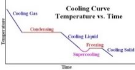

| Chapter 5.4: Liquids to solids and back again |
|
5.1 Systems |
What happens when water (or any other liquid) is cooled and eventually freezes is determined by molecular shape and the geometry of the interactions between molecules. In the case of frozen water (ice), there are in fact more than 15 types of arrangements of the molecules, ranging from amorphous to various types of “crystalline” ice. |
 |
In amorphous ice the molecules occupy positions that are more or less random with respect to their neighbors; in contrast, the molecules in crystalline ice have very specific orientations to one another. The most common form of ice, and the one we are most familiar with is known as Ice Ih: the water molecules are organized in a hexagonal, three-dimensional array. Each molecule is linked to four neighboring molecules through H-bonds. This molecular level structure is reflected at the macroscopic level - which is why snowflakes are hexagonal. Because of the bonds between them, the molecules ?can no longer move with respect to one another - ice is solid and retains it shape, at both the visible and the invisible (molecular) level. That said, since we are not at absolute zero (0 K, -273.15 ºC), the molecules are still vibrating in place. Now let us go backward, and transfer energy from the surroundings into the system, for example by heating our container. The energy is stored in the water (system) by increasing molecular vibrations. Eventually the molecules will vibrate so vigorously that the hydrogen bonds that are holding the molecules in place will be broken and the molecules will become free to move relative to each other. The ice will melt. At this temperature (0 ºC, 273.15 K), all the energy entering the system will be used to overcome intermolecular attractions (that is to break bonds, rather than increase the speed of molecular motion) – if the system is well mixed, the temperature will stay at 0ºC until all of the ice has melted, after which the temperature will start to rise again as the water molecules, now free to move relative to each other, increase in kinetic energy. Open versus closed systems |
At the boiling point, all the energy being supplied to the system is being used to overcome the intermolecular forces -similar to the way it did at the melting point - but this time the molecules separate from one another completely (although they still collide periodically.) That is: energy is used to over-come attractive forces and the individual molecules fly off into the gas phase where the distances between them they become so great that the attractive forces are insignificant . As the liquid boils the temperature (of the liquid) does not rise until all the liquid has boiled. As the gas molecules fly off, they carry with them some of the system’s energy. |
5.1
Systems |
Question to answer:
Questions to ponder and questions for later:
|
| 28-Jun-2012 |